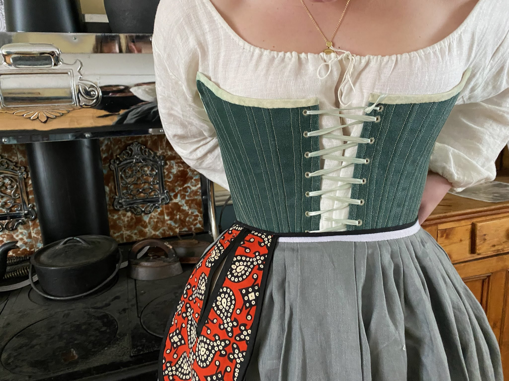
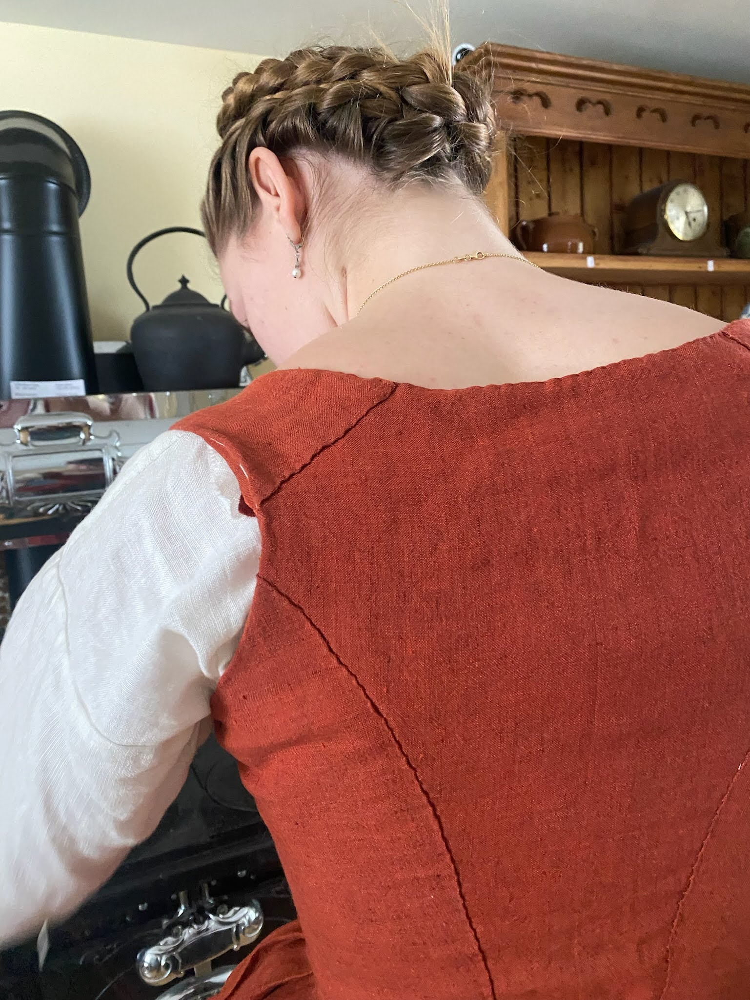
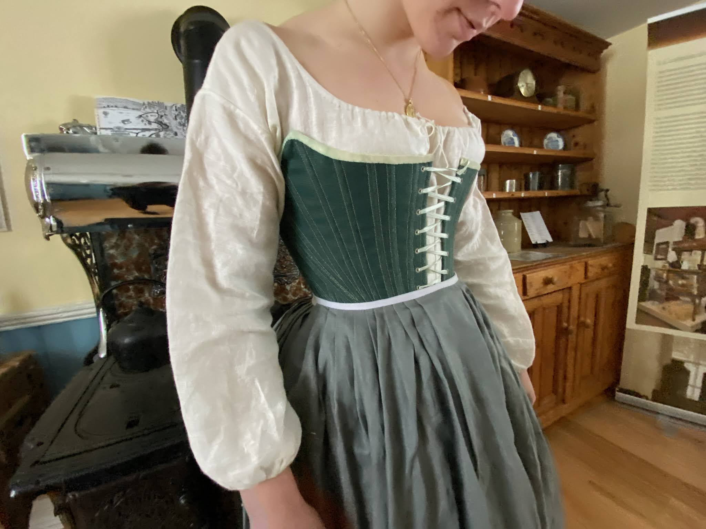
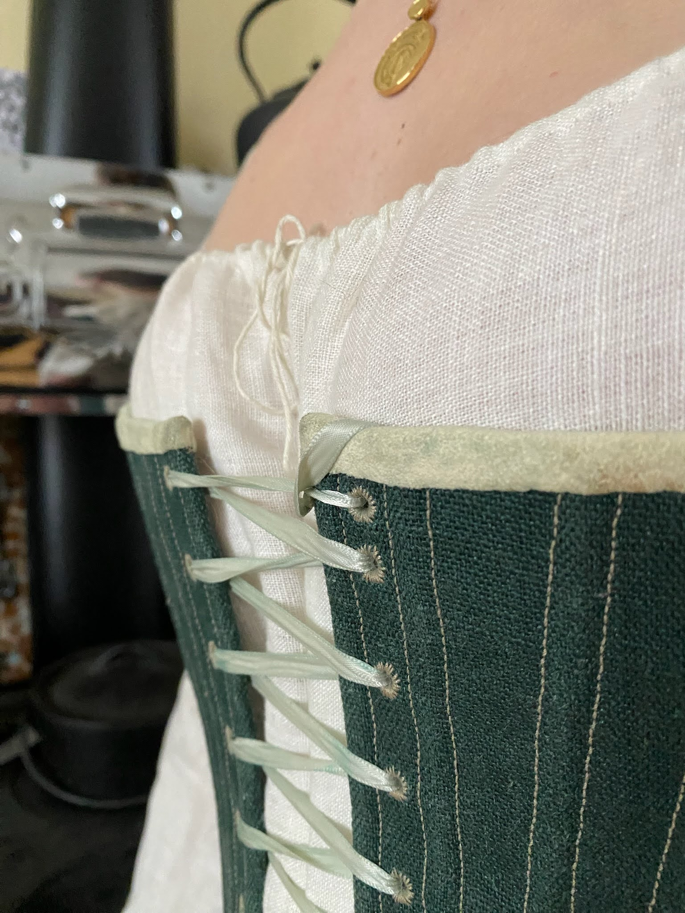
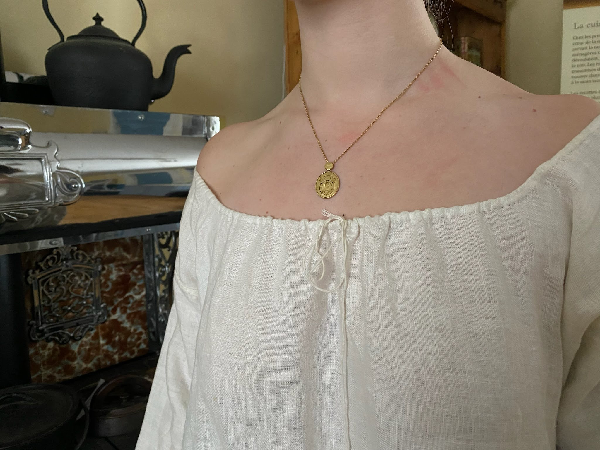
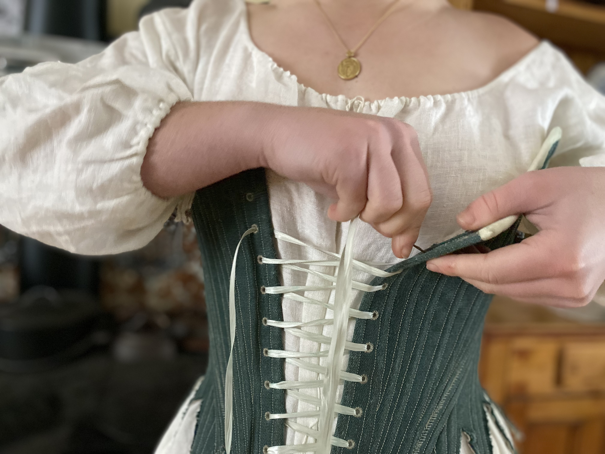
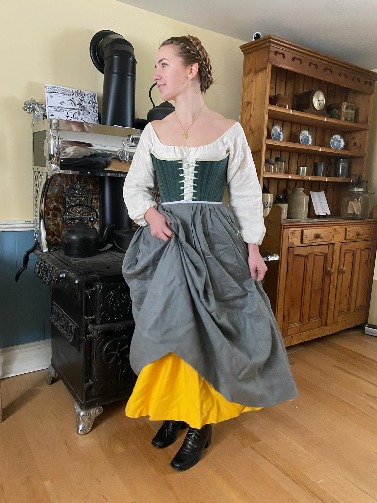

1780s Ensemble
This ensemble was made for my grade 11 personal project, but entirely self directed. The outfit would be appropriate for a working class woman from the 1780s. The stays are an adjusted version of the Redthreaded 1780s front lacing stays and are made with a cotton lining, two layers of mystery ‘linen’, plastic boning, leather binding and stiffened with gum tragacanthin. The rest of the ensemble was not made from a commercial patterned and made with linen.




Getting Dressed


